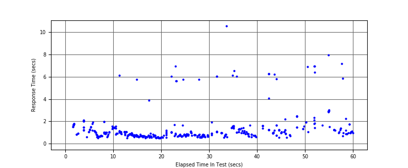
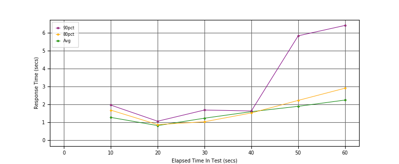
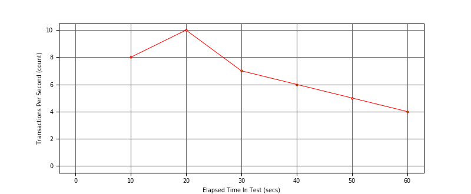

Performance Results Report
Summary
transactions: 434
errors: 0
run time: 60 secs
rampup: 0 secs
test start: 2018-05-16 20:52:44
test finish: 2018-05-16 20:53:42
time-series interval: 10 secs
workload configuration:
| group name | threads | script name |
|---|
| user_group-1 | 7 | regular_user.py |
| user_group-2 | 3 | intensive_user.py |
All Transactions
Transaction Response Summary (secs)
| count | min | avg | 80pct | 90pct | 95pct | max | stdev |
|---|
| 434 | 0.511 | 1.382 | 1.505 | 2.070 | 5.748 | 10.545 | 1.409 |
Interval Details (secs)
| interval | count | rate | min | avg | 80pct | 90pct | 95pct | max | stdev |
|---|
| 1 | 84 | 8.40 | 0.519 | 1.273 | 1.678 | 1.959 | 2.018 | 6.131 | 0.691 |
| 2 | 103 | 10.30 | 0.511 | 0.816 | 0.872 | 1.060 | 1.065 | 5.748 | 0.603 |
| 3 | 75 | 7.50 | 0.545 | 1.229 | 1.031 | 1.684 | 5.739 | 6.963 | 1.429 |
| 4 | 65 | 6.50 | 0.535 | 1.593 | 1.521 | 1.631 | 6.033 | 10.545 | 1.797 |
| 5 | 51 | 5.10 | 0.567 | 1.890 | 2.221 | 5.823 | 6.247 | 6.892 | 1.728 |
| 6 | 46 | 4.60 | 0.696 | 2.240 | 2.902 | 6.403 | 6.954 | 7.954 | 1.944 |
Graphs
Response Time: 10 sec time-series
Response Time: raw data (all points)

Throughput: 5 sec time-series

Custom Timer: Latency
Timer Summary (secs)
| count | min | avg | 80pct | 90pct | 95pct | max | stdev |
|---|
| 424 | 0.511 | 1.382 | 1.505 | 2.070 | 5.748 | 10.545 | 1.409 |
Interval Details (secs)
| interval | count | rate | min | avg | 80pct | 90pct | 95pct | max | stdev |
|---|
| 1 | 84 | 8.40 | 0.519 | 1.273 | 1.678 | 1.959 | 2.018 | 6.131 | 0.691 |
| 2 | 103 | 10.30 | 0.511 | 0.816 | 0.872 | 1.060 | 1.065 | 5.748 | 0.603 |
| 3 | 75 | 7.50 | 0.545 | 1.229 | 1.030 | 1.684 | 5.739 | 6.963 | 1.429 |
| 4 | 65 | 6.50 | 0.535 | 1.593 | 1.521 | 1.631 | 6.033 | 10.545 | 1.797 |
| 5 | 51 | 5.10 | 0.567 | 1.890 | 2.220 | 5.823 | 6.247 | 6.892 | 1.728 |
| 6 | 46 | 4.60 | 0.696 | 2.240 | 2.902 | 6.403 | 6.954 | 7.954 | 1.944 |
Graphs
Response Time: 10 sec time-series

Response Time: raw data (all points)

Throughput: 10 sec time-series
